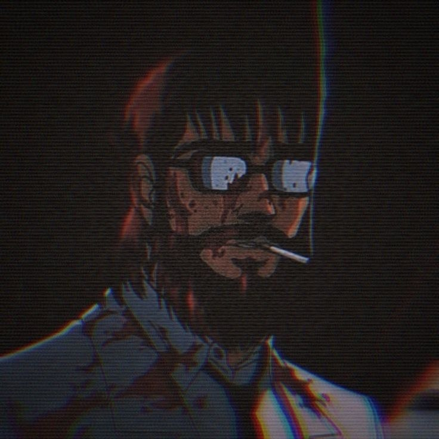

Дэвид Далласберг
вип-казах но без кобальта и айкоса, актёр кино под названием "Жизнь - кал", амбассадор по плагиату
royalty-free контента, ваш личный психолог без лицензии но с бокалом праги и винстоном с кнопкой,
суицидник который не смог... 6 раз блять, вроде блоггер, вроде стример, а вроде долбоёб, кмс по инту,
программист по неволе
Зовут меня Дэвид Далласберг. Мне уже за двадцатку, но ною я как пубертатная целка с женским максимализмом
в жопе. По профессии вроде как и программист, а вроде как просто геймер-алкаш со стажем. Всё просто, моя
учёба это ёбаная фикция, я нигде не работаю, а то что у меня в любой непонятной ситуации находятся
деньги, лишь совпадение.
Я ненавижу свою жизнь, потому что:
Я - ёбаная бездарность которая не умеет ничего (не считая физического труда и насилия, так как у меня
не было выбора).
Я - асоциальное хуйло, которое не может нормально разговаривать с людьми, потому что я словно ёбаный
чат бот, который не умеет выбирать параметры стиля общения. Таким образом я спокойно могу спиздануть
что-то, за что в ту же секунду могу получить по ёбалу, либо же стать настоящим убежищем (убежищем) для
всех кто услышит.
Я - бесперспективный биомусор, который ничего не делает, кроме как существует.
Я - хуёвый друг, по крайней мере так обо мне отзывается большая часть людей которые так или иначе со
мной общались и дружили.
Я - умер в 2012м, да может звучать странно, но я стал дединсайдом ещё до нынешней тенденции, а ныне я
просто кекаю и лишний раз тыкаю мамкиных zxc гулей, которые только научились пользоваться пенисом,
прямо в говно.